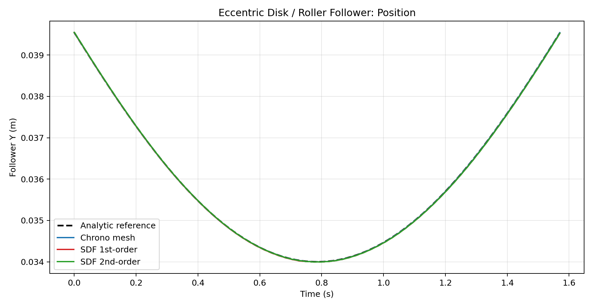
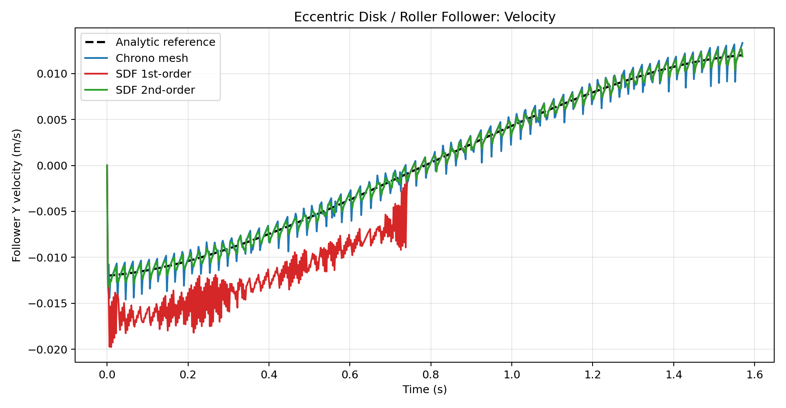
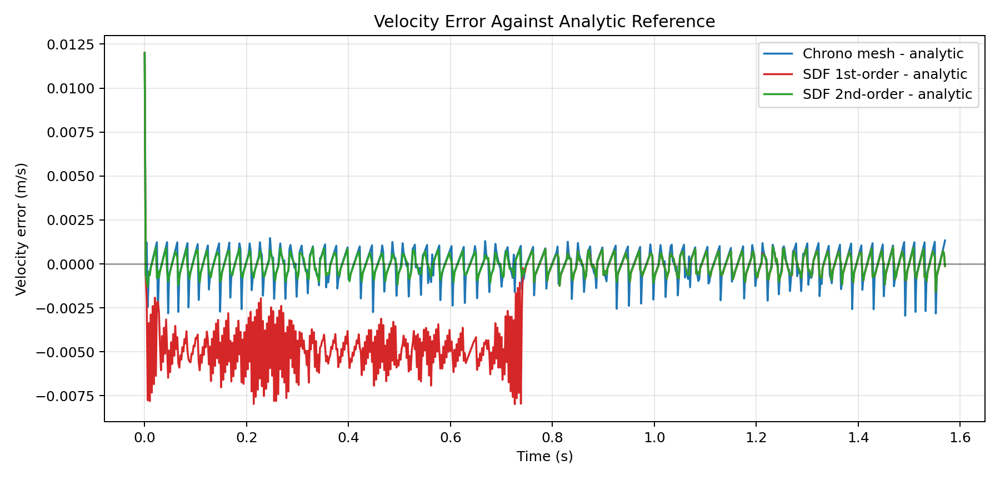

This benchmark compares Chrono native mesh contact against the current SDF 1st-order and 2nd-order
contact pipelines on a procedurally generated eccentric disk cam and vertically constrained roller follower.
The analytic reference is the ideal no-separation geometry
y(t)=e sin(ωt)+sqrt((R+r)^2-(e cos(ωt))^2).
Cam radius: 0.030 m
Eccentricity: 0.006 m
Roller radius: 0.010 m
Motor speed: -2.000 rad/s
Step size: 0.0020 s
Total time: 1.570796 s
Native mesh is the Chrono baseline. The two SDF modes reuse the current sliding-patch contact path and can be read directly against both the baseline and the analytic envelope.
This benchmark uses a dedicated SPCC_ECC tuning profile with
max_active_keep=1, cluster_radius=1.5e-3,
local_scan_radius=6e-3, avg_point=false,
and dynamics_substeps=2.
| Method | Runtime (s) | Pos RMSE (m) | Vel RMSE (m/s) | Vel Max Abs (m/s) |
|---|---|---|---|---|
| Chrono NSC native mesh | 128.119 | 0.000003 | 0.000927 | 0.012000 |
| SDF 1st-order | 15.169 | 0.000009 | 0.003522 | 0.012000 |
| SDF 2nd-order | 16.819 | 0.000009 | 0.000670 | 0.012000 |


